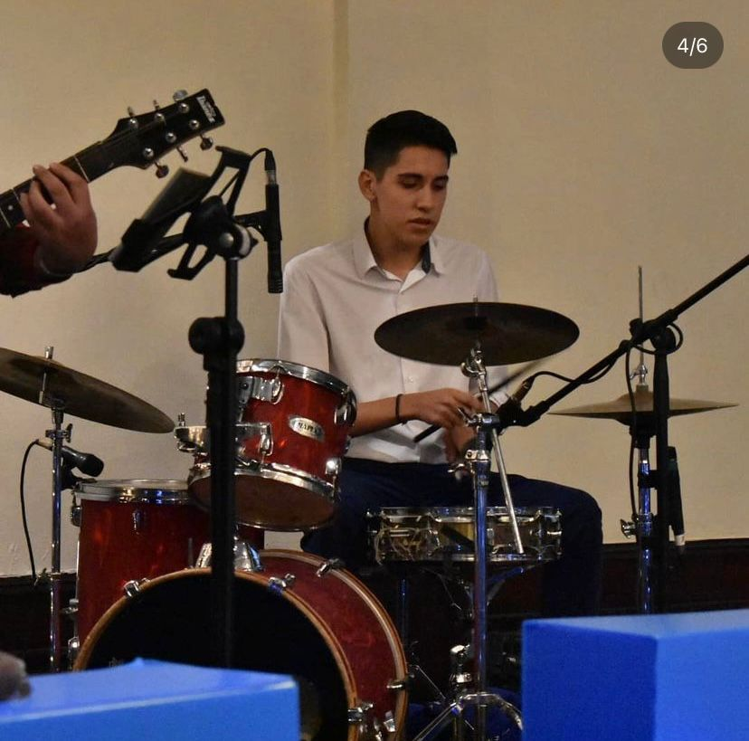
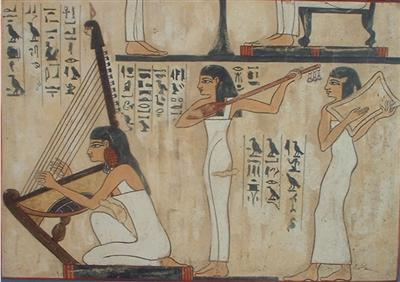

El origen de la música se encuentra cubierto de misterio, aunque se estima comenzó en la prehistoria de la humanidad y se lo vincula con los ritos de apareamiento y con el trabajo colectivo. La danza y el canto parecen haber estado desde el principio asociados al modo en que el ser humano comprende el mundo. De hecho, formaban parte de sus manifestaciones religiosas o chamánicas,
como rituales de sanación, cantos de batalla o de cacería, o bailes para atraer la lluvia.
los primeros tratados sobre la música de Occidente son de origen griego, ya que los antiguos helenos le daban mucha importancia al valor educativo y moral de la música, vinculada siempre con el poema trágico y la mitología. Su equivalente oriental se encuentra en la Antigua China, cuya música respondía ya en el siglo IV a. C. a una escala cíclica propia.

Música en la antiguedad
Es probable que el primer instrumento musical fuese la propia voz humana misma, que puede emitir una gran variedad de sonidos, desde cantar, tararear y silbar hasta hacer clic, toser y bostezar. En cuanto a otros instrumentos musicales, en 2008 los arqueólogos descubrieron una flauta de hueso con cinco agujeros en la cueva Hohle Fels, cerca de la ciudad de Ulm (Alemania).Se considera que tiene aproximadamente 35 000 años. Tiene una boquilla en forma de V y está hecha con el hueso del ala de un buitre.
Las flautas de madera más antiguas conocidas se descubrieron cerca de Greystones (Irlanda), en 2004. Un pozo revestido de madera contenía un grupo de seis flautas hechas de madera de tejo, de entre 30 y 50 cm de largo, afiladas en un extremo, pero sin agujeros para los dedos. Es posible que alguna vez hayan estado atados juntos.
Se considera que el instrumento musical más antiguo del mundo es la flauta de hueso encontrada en el sitio arqueológico de Divje Babe ―a 84 km al oeste de Liubliana (Eslovenia)―, que no fue producida por homo sápiens sino por neandertales.Se trata del fémur de un oso de las cavernas (extinguido hace 25 000 años) y data de hace entre 50 000 y 60 000 años.

Caracteristicas de la Música
La música puede definirse a muy grandes rasgos como una sonoridad organizada, coherente, significativa. Se caracteriza por el empleo de los sonidos (y de los instrumentos para producirlos) con el objetivo de producir una secuencia estéticamente apreciable y significativa.
Como todo sonido, se propaga por el aire (o el medio en el que se inserte) y por lo tanto sus propiedades dependerán de las condiciones en que se ejecute un instrumento.
Posee un ejecutor o intérprete, que es quien emplea el instrumento musical, pero también un compositor, que es quien concibió el lenguaje rítmico y sonoro que será luego interpretado en escena. Ambas personas bien pueden ser la misma.
Tipos de música
Existen muchas formas de clasificar la música, ya que se trata de un arte milenaria y de historia vasta y compleja. Sin embargo, a simple vista es posible discernir entre:
Música popular Este término se refiere usualmente a las manifestaciones musicales provenientes del pueblo llano, es decir, del folklore, la tradición y en ocasiones, la protesta. Se caracteriza por transmitirse de generación en generación y no siempre tener un autor determinado. Suelen tener profundos vínculos con la historia local y a menudo va acompañada de baile o danza.
Música académica Diametralmente opuesta de la música popular, la música académica o “clásica” es la que proviene de una tradición cultural más elitista, europea y clasicista, ya sea que provenga de los grandes compositores medievales, o bien de los estudiosos y compositores vanguardistas de la música. No siempre tiene un gran público, pero sí una importante valoración dentro de la cultura.
Música comercial Se llama así a la música consumida por el gran público de manera recreativa, y que impulsa mayormente la industria discográfica o musical del mundo entero. Abarca diversos géneros y por lo general es tenida en poca estima por la academia, aunque dichos criterios de elitismo musical siempre son cuestionables.
Música ceremonial En este caso, hablamos de la música que se utiliza para marcar celebraciones, rituales u ocasiones especiales, sin importar su autoría ni otros detalles, como es el caso de la marcha nupcial, la marcha fúnebre, la marcha presidencial de un país, etc.
Música publicitaria que acompaña a la publicidad o que sirve de cortina a programas televisivos o shows radiales. Suele ser anónima y formar parte del patrimonio de una empresa o de los productores del show. No suele ser considerada música artística en absoluto.